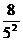
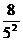
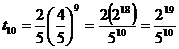

MATHS :: Lecture 19 :: PROGRESSIONS

PROGRESSIONS
In this section we discuss three important series namely
1) Arithmetic Progression (A.P),
2) Geometric Progression (G.P), and
3) Harmonic Progression (H.P)
Which are very widely used in biological sciences and humanities.
Arithmetic Progressions
Consider the sequence of numbers of the form 1, 4, 7,10… . In this sequence the next term is formed by adding a constant 3 with the current term.
An arithmetic progression is a sequence in which each term (except the first term) is obtained from the previous term by adding a constant known as the common difference. An arithmetic series is formed by the addition of the terms in an arithmetic progression.
Let the first term on an A. P. be a and common difference d.
Then, general form of an A. P is a, a + d, a + 2d, a + 3d, ...
nth term of an A. P is = a + (n - 1) d
Sum of first n terms of an A. P is
= n/2 [2a + (n - 1) d]
or = n/2 [ first term + last term]
Example 1: Find (i) The nth term and (ii) Sum to n terms of the A.P whose first term is 2 and common difference is 3.
Answer:
1)
2) 
Example 2: Find the sum of the first n natural numbers.
Solution
The sum of the natural numbers is given by
Sn=1+2+3+…+ n
This is a A.P whose first term is 1 and common difference is also one and the last term is n.
=
Example 3
Find the 15th term of the A.P 7, 17, 27,…
Solution
In the A.P 7, 17, 27,…
a =7, d = 17-7 =10 and n = 15
Geometric Progression
Consider the sequence of numbers
a) 1, 2, 4, 8, 16…
b) 1, , , …
In the above sequences each term is formed by multiplying constant with the preceding term. For example, in the first sequence each term is formed by multiplying a constant 2 with the preceding term. Similarly the second sequence is formed by multiplying each term by  to obtain the next term. Such a sequence of numbers is called Geometric progression (G.P).
to obtain the next term. Such a sequence of numbers is called Geometric progression (G.P).
A geometric progression is a sequence in which each term (except the first term) is derived from the preceding term by the multiplication of a non-zero constant, which is the common ratio.
The general form of G.P is a, ar, ar2, ar3,…
Here ‘a’ is called the first term and ‘r’ is called common ratio.
The nth term of the G.P is denoted by is given by
The sum of the first n terms of a G.P is given by the formula
if r>1
if r<1
Examples
1. Find the common ratio of the G.P 16, 24, 36, 54.
Solution
The common ratio is =
2. Find the 10th term of the G.P  , ,,…
, ,,…
Solution:
Here a = and r =
Since we get

Sum to infinity of a G.P
Consider the following G.P’s
1).
2).
In the first sequence, which is a G.P the common ratio is r =  .In the second G.P the common ratio is r =
.In the second G.P the common ratio is r =  . In both these cases the numerical value of r =
. In both these cases the numerical value of r =  <1.(For the first sequence = and the second sequence
<1.(For the first sequence = and the second sequence  =
= and both are less than 1. In these equations, ie.
and both are less than 1. In these equations, ie.  <1 we can find the “Sum to infinity” and it is given by the form
<1 we can find the “Sum to infinity” and it is given by the form
provided -1<r<1
Examples
1. Find the sum of the infinite geometric series with first term 2 and common ratio  .
.
Solution
Here a = 2 and r =
2. Find the sum of the infinite geometric series 1/2 + 1/4 + 1/8 + 1/16 + · · ·
Solution:
It is a geometric series whose first term is 1/2 and whose common ratio is 1/2, so its sum is
Harmonic Progression
Consider the sequence .This sequence is formed by taking the reciprocals of the A.P a, a+d, a+2d,…
For example, consider the sequence
Now this sequence is formed by taking the reciprocals of the terms of the A.P 2, 5, 8, 11…. Such a sequence formed by taking the reciprocals of the terms of the A.P is called Harmonic Progression (H.P).
The general form of the harmonic progression is 
The nth term of the H.P is given by 
Note
There is no formula to find the sum to n terms of a H.P.
Examples
1. The first and second terms of H.P are  and respectively, find the 9th term.
and respectively, find the 9th term.
Solution
Given a = 3 and d = 2
Arithmetic mean, Geometric mean and Harmonic mean
The arithmetic mean (A.M) of two numbers a & b is defined as
A.M =
|
(1. 1) |
Note: Arithmetic mean. Given x, y and z are consecutive terms of an A. P., then
y - x = z - y
2y = x + z
y is known as the arithmetic mean of the three consecutive terms of an A. P.
The Geometric mean (G.M) is defined by
G.M =
|
(1. 2) |
The Harmonic mean (H.M) is defined as the reciprocal of the A.M of the reciprocals
ie. H.M =
H.M=
|
(1. 3) |
Examples
1 .Find the A.M, G.M and H.M of the numbers 9 & 4
Solution:
A.M =
G.M=
H.M=
2. Find the A.M,G.M and H.M between 7 and 13
Solution:
A.M =
G.M=
H.M=
3. If the A.M between two numbers is 1, prove that their H.M is the square of their G.M.
Solution
Arithmetic mean between two numbers is 1.
ie.  =1
=1
Now H.M =
G.M =
| Download this lecture as PDF here |